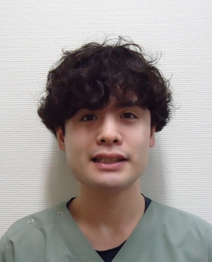
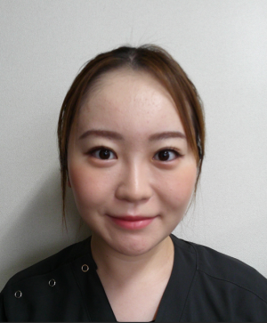

産婦人科医師紹介
産婦人科部長
岡 秀明
OKA Hideaki
昭和60年富山医科薬科大学（現富山大学）卒業。平成6年に帰福し、福井総合病院、公立小浜病院勤務後、平成21年12月に福井愛育病院に赴任。りんご病での母子感染の研究で博士号取得。
産婦人科部長
髙橋 望
TAKAHASHI Nozomu
平成22年福井大学医学部卒業。福井大学医学部附属病院、福井県済生会病院勤務を経て、令和6年4月より福井愛育病院勤務。
専門資格
- 日本産科婦人科学会専門医
- 母体保護法指定医

産婦人科医員
加藤 将人
KATO Masato
平成31年3月福井大学医学部卒業。福井大学医学部附属病院、舞鶴共済病院、中部国際医療センター、福井県済生会病院での勤務を経て、令和7年4月より福井愛育病院産婦人科勤務。
専門資格
- 日本産科婦人科学会専門医
産婦人科医員
中村 百合子
NAKAMURA Yuriko
令和3年福井大学卒業。千葉県松戸市立総合医療センターで初期研修後、福井大学医学部附属病院、福井県立病院勤務を経て、令和7年より福井愛育病院勤務。

産婦人科医員
北倉 えり茅
KITAKURA Erika
令和3年3月聖マリアンナ医科大学卒業。福井大学医学部附属病院で初期研修後、同附属病院産婦人科、福井県立病院勤務を経て、令和7年10月より福井愛育病院産婦人科勤務。
顧問（非常勤）
山本 宝
YAMAMOTO Takara
昭和49年京都府立医科大学医学部卒業。昭和54年～57年米国留学。平成12年～福井愛育病院副院長就任。平成20年4月より福井愛育病院病院長。平成30年6月より顧問。
専門資格・役職
- 京都府立医大臨床教授（客員講師）
- 福井大学医学部臨床教授（客員講師）
- 日本産科婦人科学会専門医
- 日本女性医学学会認定医
- 女性ヘルスケア専門医・指導医
- 産婦人科指導医
- 日本周産期新生児学会暫定指導医
- 日本医師会認定産業医
- 母体保護法指定医